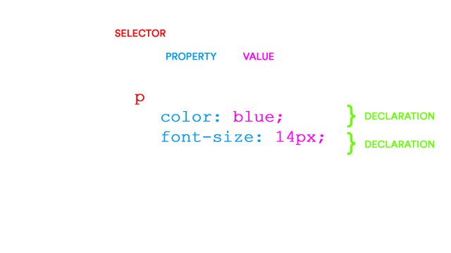

Web Literacy 101
Aaron SiegelServer
A server is a network enabled computer running software that allows clients to connect to it.
Client
A client is any network enabled computer that makes a connection to the server.
Network
The network consists of many clients connecting to the server. Each client makes a request for a service and the server is able to handle them seperately and quickly.
A web server hosts files for clients to download and display as web pages using browsers.
Back-end
Back-end involves scripts, databases, and applications that run on a server.
Front-end
Front-end involves files and scripts that are downloaded from the server and displayed and run on a client.
Hyper Text Markup Language
Back-end
Front-end
Cascading Style Sheets
.half{
float: left;
width: 50%;
}
.half img{
width: 50%;
}
.third{
float: left;
width: 33.3%;
}
JavaScript
function myFunction() {
var x = document.getElementById("me");
x.style.fontSize = "25px";
x.style.color = "red";
}
PHP: Hypertext Preprocessor
Python
#!/home/asiegel/dev/bin/python
import sys, cgi, urllib, pafy
print "Content-Type: video/mp4\n"
BUFFER_SIZE = 16 * 1024
form = cgi.FieldStorage()
id = form["id"].value
url = "https://www.youtube.com/watch?v=" + id
video = pafy.new(url)
best = video.getbest()
req = urllib.urlopen(best.url)
while 1:
chunk = req.read(BUFFER_SIZE)
if not chunk:
break
sys.stdout.write(chunk)
req.close()
Structured Query Language
SELECT isbn,
title,
price
FROM Book
WHERE price < (SELECT AVG(price) FROM Book)
ORDER BY title;
HTML tags open and close. Some have content or other tags nested inside them, as seen with the <p> tag. The image tag <img> opens and closes in the same tag, with the closing slash at the end.

A variety of properties can be added to HTML tags to modify them. In this case the source attribute "src=" is telling the browser to find the image cat.jpg. Both of these tag statements are considered elements.



This configuration of tags will appear in virtually every HTML page.
Doctype declares to browsers what type of file this document is.

The <html> tags note the beginning and ending of the markup.

The <head> section contains the site's non-visible metadata.
The content inside the <title> tag appears at the top of the browser.
The link tag connects the document to the CSS elsewhere on the web server.
The body section contains the visible content of the website.
Tabbing elements is an important way to organize your code.

Thinking non-linearly is important for writing and editing your markup.

The given content of a website, without tags or notation.
Without markup, the browser sees the content like this. It lacks any formatting.
This shows the markup and content within the <body> tag.

<h1> - <h6> tags are for varying sized header text.

<ol> ordered and <ul> unordered tags allow you to create bulleted lists.

<li> tags identify individual elements within a list.
<a> tags are anchors, or more commonly known as links.

Returns and spaces are invisible in HTML, so the <p> tag is used to create paragraphs.

The browser displays the HTML in this way by default.
A basic style sheet with declarations for tags used in the html demo.

Selectors define tag types to modify; properties define attributes to modify.

Our CSS has changed the appearance of the default HTML tags.
Google
Syllabus
Links to other web sites must include the http:// in the url. Local links can use a file path relative to the current file's position on the server. The content inside the tag is what appears to users as the visible and clickable link.
The <link> tag is used in the <head> section to connect CSS to HTML.

The root directory contains all of your website assets and is considered your main folder.
index.html must always be directly inside the root directory. This is your site's front page.

site.css defines the CSS for all files that use the <link> tag to apply it.

Organization and naming conventions are your design. Just keep it simple and logical.
All files need their extension. It is conventional to make all filenames lowercase.
Understanding the relative paths between your site assets is important!